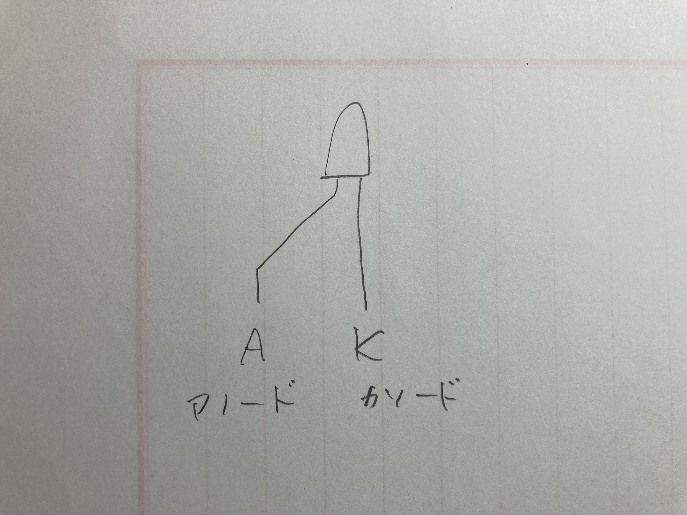

Arduinoでエアコン自動化・水耕栽培
Table of Contents
Author: Ryo Haruyama
このプロジェクトは現在進行中で、本稿はいまだに内容が少なく、かつ解説がわかりにくいです。いずれキリの良いタイミングで、わかりやすく書き直すと思います。
このアカウントでは「Arduinoでエアコン自動化・水耕栽培」に関する進捗を随時更新しています。そちらを見ていただければ最新の情報にたどりつけます。
はじめに
この文章は、マイクロコンピュータ(マイコン)を用いて水耕栽培を自動化することを目標にした開発の備忘録で、現在執筆中です。
マイコンとは、ざっくりいうと小さいコンピュータです。パソコンと違ってディスプレイやキーボードがついておらず、機器は必要に応じてくっつけていきます。例えば、光や温度のセンサーから情報を得てプログラムで処理し、モーターに働きかけることなどができます。
マイコンで水耕栽培をするメリットは、次の通りです。
- 自動化により人手が減らせる。水耕栽培では、葉物野菜が比較的容易に作れる。(参考：【お手軽自作】ちょっと自作したい人におすすめ。水耕栽培装置を一から作る！)
- データが取れるので仮説検証のサイクルが回しやすい。例えば、この光量だとレタスが苦くなるががこの光量だと苦くならない、のようなノウハウが蓄積できる。(参考：ラズパイでIoT MySQLの温度データを表示しよう)
このアイデアの検証、また必要資源の確認のため、マイコンでの処理の部分だけを抜き出し、まずマイコンでエアコンの自動化を試みます。何時にこの処理をスタートし、何時にこの処理をストップする、のような基本的なやることは水耕栽培とあまり変わらないためです。
また、エアコンの自動化はどの道やっておいて損はないという理由もあります。
以下、専門的な話が続きます。
背景
todo
Arduinoでエアコン自動化
買い物
真先に買ったのはこのスターターキットです。
しかし購入してたったの一日でUNO R3 Boardをショートさせて壊してしまいました。回路を配線するときはネットで拾ってきた自分が理解していない回路を組むべきではない、という教訓を得ました。代わりに買ったのがこれです。
大須アメ横ビルで赤外線LED購入
環境構築
ホスト環境は以下の通りです：
$ lsb_release -a No LSB modules are available. Distributor ID: Ubuntu Description: Ubuntu 18.04.5 LTS Release: 18.04 Codename: bionic
Arduino IDEの設定については次のブログが参考になります。
このブログにはGUIのArduino IDEを用いる方法が書かれています。しかし私の環境ではこの方法は少し問題がありました。具体的にいうと、以前行なった設定がリブート後に持ち越せませんでした。ですので、次に紹介するCLIを使うことにしました。
エディタはemacsで、c-modeをhookして使いました。
;; ~/.emacs.d/init.el
;; hook c-mode when .ino extension
(add-to-list 'auto-mode-alist
'("\\.ino\\'" . (lambda ()
(c-mode)
)))
ビルドはコマンドラインから行います。
# Makefile DEV = ttyUSB0 CC = /opt/arduino-cli_0.20.2_Linux_64bit/arduino-cli monitor:up $(CC) monitor -p /dev/$(DEV) up:compile $(CC) upload --port /dev/$(DEV) --fqbn esp32:esp32:esp32 . compile:device $(CC) compile --fqbn esp32:esp32:esp32 . device: sudo chmod a+rw /dev/$(DEV) new: $(CC) sketch new $(SRC)
arduino-cliコマンドのパスを通します。
# ~/.bashrc export PATH="$PATH:/opt/arduino-cli_0.20.2_Linux_64bit/"
Arduinoで内蔵LEDを点滅させる
todo
Arduinoで外部LEDを点滅させる
#define LED_PIN 13
void setup() {
pinMode(LED_PIN, OUTPUT);
}
void loop() {
digitalWrite(LED_PIN, HIGH);
delay(500);
digitalWrite(LED_PIN, LOW);
delay(500);
}


Arduinoで赤外線を受信し、16進数で取得
LEDをトランジスタで点滅させる
todo
赤外線LEDをトランジスタで点滅させる
todo
WiFi経由でLEDを点滅させる
フロントエンド
Elm + VSCode
バックエンド
Rust + emacs
Arduinoで水耕栽培
todo